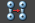

位于“绑定”(Rigging)菜单集中。
重要： 已从 Maya 中删除了刚性绑定菜单选项，以简化其他工作流。使用刚性蒙皮主题中提供的脚本命令仍可获得刚性绑定功能。您还可以使用每个顶点 1 个影响的平滑蒙皮获得刚性绑定。
绑定
- 绑定蒙皮
- 将几何体绑定到任意变换节点或节点层次，如空组节点或定位器。例如，可以绑定多边形网格到已连接到样条线曲线 CV 的定位器节点，创建变形效果。
- 使用“绑定蒙皮选项”(Bind Skin Options)，可以限制影响附近蒙皮点的关节数量，并限制关节的影响范围。
- 若要打开并更改绑定蒙皮选项，请选择“蒙皮 > 绑定蒙皮”(Skin > Bind Skin) >
 。
。
另请参见绑定平滑蒙皮。
- 交互式绑定蒙皮
- 若要打开并更改交互式绑定蒙皮选项，请选择“蒙皮 > 交互式绑定蒙皮”(Skin > Interactive Bind Skin) > 。
- 取消绑定蒙皮
- 绑定蒙皮后，您可能决定要修改骨架、更改绑定姿势或在蒙皮上执行进一步建模。若要执行这些操作，首先从骨架上取消绑定蒙皮，然后再次绑定蒙皮。
注： “取消绑定蒙皮”(Unbind Skin)会从选定几何体中移除所有蒙皮簇，即使具有多个蒙皮簇也是如此。
- 若要打开并更改取消绑定蒙皮选项，请选择“蒙皮 > 取消绑定蒙皮”(Skin > Unbind Skin) > 。
- 转到绑定姿势
- 将骨架返回到其基于选定曲面而设定的绑定姿势所在的位置。请参见绑定姿势。
- “转到绑定姿势”(Go to Bind Pose)支持多个蒙皮簇。若要将多个蒙皮簇与“转到绑定姿势”(Go to Bind Pose)一起使用，请选择“蒙皮 > 转到绑定姿势”(Skin > Go to Bind Pose) > 以打开管理多个蒙皮簇主题。
权重贴图
- 绘制蒙皮权重
- 使用“绘制蒙皮权重工具”(Paint Skin Weights Tool)，可以在当前平滑蒙皮上绘制权重强度值。有关使用“绘制蒙皮权重工具”(Paint Skin Weights Tool)的详细信息，请参见下列主题：
另请参见 Artisan 笔刷工具的工作方式。
注： “绘制蒙皮权重工具”(Paint Skin Weights Tool)禁用了“反射”(Reflection)。将“蒙皮 > 镜像蒙皮权重”(Skin > Mirror Skin Weights)用作反射蒙皮权重的替代方法。 - 选择“蒙皮 > 绘制蒙皮权重”(Skin > Paint Skin Weights) > 以打开绘制蒙皮权重工具。
- 镜像蒙皮权重
- 可以从一个平滑蒙皮对象到另一个平滑蒙皮对象，或者在同一平滑蒙皮对象内，镜像平滑蒙皮权重。也可以在蒙皮的选定组件上镜像蒙皮权重。
- 若要打开并更改镜像蒙皮权重选项，请选择“蒙皮 > 镜像蒙皮权重”(Skin > Mirror Skin Weights) > 。
- 复制蒙皮权重
- 该工具可将选定源蒙皮的蒙皮权重复制到选定目标蒙皮。有关如何复制平滑蒙皮权重的信息，请参见复制平滑蒙皮权重。另请参见复制平滑蒙皮权重。
提示：为了在复制平滑蒙皮权重时获得最佳结果，请注意以下事项：
- 使用空间比较复制蒙皮权重时，应该将源蒙皮和目标蒙皮放置在场景中相同的位置。例如，复制权重的目标蒙皮网格和源蒙皮网格应该放置在相同的 X、Y、Z 坐标位置。此外，源蒙皮和目标蒙皮在大小和比例方面应该相似。例如，将平滑蒙皮权重从一个中等大小的两足动物模型复制到另一个中等大小的两足动物模型，产生的效果会比将平滑蒙皮权重从一个小型两足动物模型复制到大型两足动物模型产生的效果好得多。
- 在空间上分隔开或具有差异很大的规模和比例的角色上复制蒙皮权重时，应该使用 UV 空间关联选项。
- 若要打开并更改复制蒙皮权重选项，请选择“蒙皮 > 复制蒙皮权重”(Skin > Copy Skin Weights) > 。
- 平滑蒙皮权重
- 平滑选定蒙皮对象的蒙皮权重。
- 若要打开并更改平滑蒙皮权重选项，请选择“蒙皮 > 平滑蒙皮权重”(Skin > Smooth Skin Weights) > 。
- 锤式蒙皮权重
- 为选定顶点指定与其相邻顶点相同的权重值，从而使变形更加平滑。对于因权重导致网格上出现不需要的变形的选定顶点，这是一种快速的修复方式。请参见修复平滑权重。
- “锤式蒙皮权重”(Hammer Skin Weights)支持多个蒙皮簇。若要将多个蒙皮簇与“锤式蒙皮权重”(Hammer Skin Weights)一起使用，请选择“蒙皮 > 锤式蒙皮权重”(Skin > Hammer Skin Weights) > 以打开管理多个蒙皮簇主题。
- 复制顶点权重
-
复制选定顶点的权重值。请参见复制平滑蒙皮权重。
- 粘贴顶点权重
- 将复制的顶点权重值粘贴到其他选定的顶点。
- 删减小权重
- 删减当前关节的小权重。删减小权重可加快处理速度。请参见删减次要的平滑蒙皮权重。
- 若要打开并更改删减小权重选项，请选择“蒙皮 > 删减小权重”(Skin > Prune Small Weights) > 。
- 重置默认权重
- 将选定关节的权重重置为初始默认值。请参见将蒙皮点权重重置为默认权重。
- “重置默认权重”(Reset Default Weights)支持多个蒙皮簇。若要将多个蒙皮簇与“重置默认权重”(Reset Default Weights)一起使用，请选择“蒙皮 > 重置默认权重”(Skin > Reset Default Weights) > 以打开管理多个蒙皮簇主题。
- 归一化权重(Normalize Weights)
-
为平滑蒙皮启用归一化后，Maya 会归一化权重值，以便在更改一个权重值时，自动更改受相同因素影响的其他点。
（另请参见平滑蒙皮权重归一化。）
以下选项可用于控制权重归一化：- 禁用权重归一化
- 对当前骨架禁用平滑蒙皮权重的自动归一化。
- “禁用权重归一化”(Disable Weight Normalization)支持多个蒙皮簇。若要将多个蒙皮簇与“禁用权重归一化”(Disable Weight Normalization)一起使用，请选择“蒙皮 > 禁用权重归一化”(Skin > Disable Weight Normalization) > 以打开管理多个蒙皮簇主题。
- 启用权重后期归一化
- 启用平滑权重的自动归一化，并将“归一化权重”(Normalize Weights)模式设置为“后期”(Post)。请参见归一化权重模式。
- “启用权重后期归一化”(Enable Weight Post Normalization)支持多个蒙皮簇。若要将多个蒙皮簇与“启用权重后期归一化”(Enable Weight Post Normalization)一起使用，请选择“蒙皮 > 启用权重后期归一化”(Skin > Enable Weight Post Normalization) > 以打开管理多个蒙皮簇主题。
- 启用权重归一化
- 为当前骨架启用平滑蒙皮权重的自动归一化。
- “启用权重归一化”(Enable Weight Normalization)支持多个蒙皮簇。若要将多个蒙皮簇与“启用权重归一化”(Enable Weight Normalization)一起使用，请选择“蒙皮 > 启用权重归一化”(Skin > Enable Weight Normalization) > 以打开管理多个蒙皮簇主题。
- 归一化权重(Normalize Weights)
- 调整选定骨架的权重，以使所有平滑蒙皮权重加在一起。请参见设置归一化模式和归一化权重。
- “归一化权重”(Normalize Weights)支持多个蒙皮簇。若要将多个蒙皮簇与“归一化权重”(Normalize Weights)一起使用，请选择“蒙皮 > 归一化权重”(Skin > Normalize Weights) > 以打开管理多个蒙皮簇主题。
- 导出权重贴图(Export Weight Maps)
- 打开“写入映射”(Write Map)文件浏览器，以便您可以指定用于存放贴图文件的文件夹（或目录）的路径和名称。若要打开并更改导出权重贴图选项，请选择“蒙皮 > 导出权重贴图”(Skin > Export Weight Maps) > 。另请参见导出蒙皮权重。
-
注： 默认情况下，Maya 将指定的文件夹名称置于当前项目的 sourceimages 文件夹下。当平滑蒙皮曲面时，Maya 将在每个关节创建一个权重贴图。使用“导出权重贴图”(Export Weight Maps)菜单项，可以同时导出所有权重贴图。
- 导入权重贴图(Import Weight Maps)
- 启动“导入”(Import)文件浏览器，从而可以将蒙皮权重贴图导入到场景中。请参见导入蒙皮权重，了解有关将权重导入另一个场景中的角色或导入回原始角色的信息。
- “导入权重贴图”(Import Weight Maps)支持多个蒙皮簇。若要将多个蒙皮簇与“导入权重贴图”(Import Weight Maps)一起使用，请选择“蒙皮 > 导入权重贴图”(Skin > Import Weight Maps) > 以打开管理多个蒙皮簇主题。
其他(Other)
- 交互式蒙皮绑定工具(Interactive Skin Bind Tool)
- 可用于通过修改体积操纵器的形状和位置，快速设置选定网格的初始权重。操纵器针对网格上每个对象的影响为您提供了视觉指示。请参见平滑蒙皮的交互式绑定。
- 若要打开并更改交互式蒙皮绑定工具设置，请参见“蒙皮 > 交互式蒙皮绑定工具”(Skin > Interactive Skin Bind Tool) > 。
- 移动蒙皮关节
-
使“移动蒙皮关节工具”(Move Skinned Joints Tool)成为当前工具。
- 若要打开并更改移动蒙皮关节工具设置，请选择“蒙皮 > 移动蒙皮关节”(Skin > Move Skinned Joints) > 。
- 将权重移动到影响物
- 将选定顶点的权重值从其当前影响物移动到选定影响物。
第一个选定影响将作为源影响，其他所有选定影响都作为目标。如果在“绘制蒙皮权重工具”(Paint Skin Weights Tool)或“组件编辑器”(Component Editor)中锁定了一个影响物，则该影响物不会接收从邻近影响物移动的权重。
该菜单项也作为“绘制蒙皮权重工具”(Paint Skin Weights Tool)中的一个按钮  提供。请参见移动权重和将权重移动到影响物以获得更多信息。
- 编辑影响物
- 打开“编辑影响物”(Edit Influences)菜单。
- 替换几何体
-
使用“替换几何体”(Substitute Geometry)，可将一个未绑定的几何体与您角色的绑定几何体交换，并将所有平滑蒙皮权重都传递给它。另请参见将绑定几何体替换为未绑定的几何体。
若要打开并更改替换几何体选项，请选择“蒙皮 > 替换几何体”(Skin > Substitute Geometry) >
。
- 烘焙变形到蒙皮权重(Bake Deformation to Skin Weights)
- 打开“烘焙变形器工具”(Bake Deformer Tool)，用于从任意变形器创建变形，以便将复杂装备导出到具有有限变形器支持的应用程序。它允许 Maya 使用计算“更智能的”权重值的方法（而非其他绑定方法）将网格绑定到骨架。有关窗口中各选项的描述，请参见烘焙变形器工具(Bake Deformer Tool)。